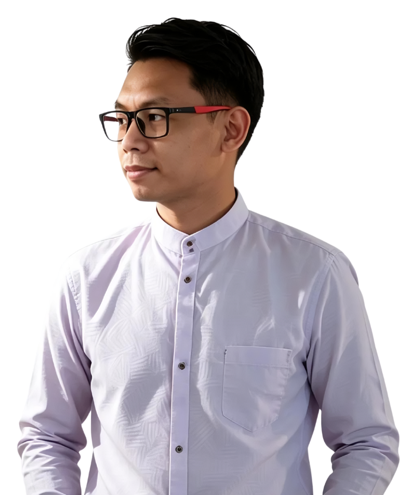

01 · RESEARCH2 weeks
Queue-anxiety, not speed. The real problem hid behind the brief.
Mixed-method discovery: 44 survey responses + 4 in-clinic shadowing sessions across 4 lobbies.

Mid-level Product Designer for B2B SaaS, healthtech, and edtech. Eight years shipping — 5-year in visual systems, 3-year end-to-end — backed by user research, design systems, and frontend code.
SELECTED CLIENTS · 2018 — TODAY
Queue-anxiety, not speed. The real problem hid behind the brief.
Mixed-method discovery: 44 survey responses + 4 in-clinic shadowing sessions across 4 lobbies.
Atomic system. 6 flows. Prototype tested at SUS 80.
Pre-visit flow as anchor. Built token-driven system in Figma — handed off as production tokens, not screenshots.
Round 2 hi-fi test (n=5–7). HTML prototype in build.
Writing production-ready React for the queue screens. Phased rollout planned once Round 2 validates motion + voice.
The page had to earn the pitch.
Sole design hire reporting to the CEO. No design system, no frontend team. Every call answered one question: does this make the demo end with a yes?
Volunteered to ship the frontend myself.
When engineering fell through, I built 6 pages in Elementor with custom CSS — collapsing design-to-dev handoff and resolving 14+ responsive bugs directly.
A custom illustration system, not stock.
~80% custom illustrations + 30–50 brand-aligned icons. Sharper demos, faster Product/Sales/Marketing alignment, elevated brand vs. baseline Salesforce templates.
Four products, four visual languages, one craft discipline. Three years of microstock built the muscle: atomic, reusable, brand-aligned — tuned to the moment of trust each product depends on.
Icons at the trust threshold.
6 onboarding icons for a security-first mobile app — the first signal a user uses to decide whether to trust it with their data.
Wayfinding for non-experts.
A 22-icon library + data-viz for renewable-energy decision-makers. Good visual treatment turned complex data into a decision tool.
Systems for industrial scale.
Battery-lifecycle analytics for European industrial markets — iconography that holds up across a dense, expert-domain interface.
I'm Rahmat Taufiqurrahman — Product Designer based in Indonesia. Eight years across healthtech, B2B SaaS, and visual systems for international markets including US, Netherlands, Germany, and Israel.
Came to design from Mechanical Engineering at ITS Surabaya. The first 1.5 years (Berkah Studio, 2018–2019) were high-volume icon production for global microstock — where I learned atomic design as a working discipline.
"Taufiq turned our rough Salesforce templates into something prospects actually wanted to demo. He owned design and shipped the frontend himself — saved us months."
"His icons for our security app weren't decorative — they were the trust signal at the highest-stakes touchpoint. We launched faster because of that level of detail."
B2B SaaS · Healthtech · Edtech. End-to-end. Research to shipped frontend code.